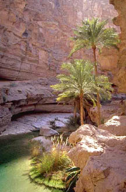

|
| Home / Dive Resorts / Live-Aboards / Snorkeling / Who We Are / Book a Trip |
| |
© Copyright U.S. Dive Travel Network.
U.S. DIVE TRAVEL's RED-HOT
NEW DIVE VACATION PACKAGES
for divers who crave some Vitamin Sea ! !

What's
new with the beautiful HUMBOLDT EXPLORER in the GALAPAGOS ISLANDS for this new season?
•
Now we offer up to four dives a day !
•
Also, exciting night dives are offered whenever the weather allows !
•
Plus two land visits – for memorable photo opps -- normally are allowed on each cruise, as weather permits !
•
Plus at least four action-filled days in the coveted Wolf & Darwin Islands,
where only an elite handful of diving yachts have a permit to visit !
HUMBOLDT EXPLORER specials cannot be combined with other discounts or the small
group policy & do not count toward the 6th trip credit. Additional booking
terms & requirements may apply. Call Susan, John or L.J. at 952-953-4124 for
specifics.
We look forward to working with you, as HUMBOLDT EXPLORER is the best-value
luxury diving live-aboard we’ve ever repped in the Galapagos. She is THE best value vessel extant, for price & service. Please remember: for all Explorer Ventures yachts, 365 days a year, we offer these special terms (the most lenient deposits in the industry): bring 5 divers & the 6th diver gets a free boat package.
Call 952-953-4124 for up-to-the-minute details...

Discover the beauty of the South Andaman Sea with stops at some of
our favorite sites:
·
Shark
Point - named for the frequent leopard shark sightings.
·
Anemone
Reef - blanketed by a living carpet of anemones.
·
Phi
Phi Islands - filled with rich and colorful diverse marine life.
·
King
Cruiser - 85m catamaran passenger ferry wreck with multiple decks and open
passages that will thrill every level of wreck diver.
We'll be announcing summer & fall specials soon for our beautiful brand-new liveaboard, the BAHAMAS AGGRESSOR, so please feel free to phone our live-aboard vacation experts at 952-953-4124 for more details.
Throughout this exciting action-filled scuba week aboard the BAHAMAS AGGRESSOR, an intimate 14-passenger monohull yacht, guests will depart Nassau to explore the dramatic walls, lush coral reefs and exciting animal encounters of the Exuma Cays. The itinerary also will include the Exuma Cay Land and Sea Park which is one of the world's most successful marine parks with an area of 176 square miles consisting of an array of more than 350 small islands and cays.
Prices expected to remain among the lowest of any luxury live-aboards in the Caribbean. Air tickets, hotel nights, side tours & tips are extra costs. This BAHAMAS AGGRESSOR really rocks, amigos del mar, in every culturally pulse-prodding good sense.
The BAHAMAS AGGRESSOR will be a delight to NorthAm dive trip clients, because of low-cost, super-easy air tix from Miami to Nassau. Nuts to this nettlesome recession, friends, we intend to offer BAHAMAS AGGRESSOR as a high-quality recession buster! Time to have some easy, accessible, fun winter diving.
EXCITING CARIBBEAN LIVE-ABOARD NEWS!! We now have new openings -- exceptionally rare -- on the Caribbean's finest whale-watching live-aboard, the M/V SUN DANCER, for the Jan-to-March 2017, 2018 & 2019 HUMPBACK WHALE-WATCHING seasons. These are among the most sought-after snorkeling live-aboard berths in the world, folks. We are truly enthused to report this.
Also, every now & then 2 or 3 berths may open up for lucky snorkelers, certain weeks from January through March 2017 -- & also in 2018 -- as random cancellations occur. Because of the high demand worldwide for these limited whale-watching berths -- if you snooze, you lose, mates. Therefore, if you feel the Spirit move, you'd best not tarry. The phone rings daily for these prized whale-watching live-aboard packages, so stay on your toes, friends :)
Please feel free to phone our live-aboard vacation experts at 952-953-4124 for more details.
Whale-cruise skipper Capt. Gene Flipse, who is one of the most authentic & life-positive gents we've had the pleasure of collaborating with in decades, is an expert on these whales' behaviors, their delightful quirks & soulful natures. Here's what Cap'n Gene tells us to expect each heart-starting season...
Every year, from 3,000 to 5,000 humpback whales migrate from their summer feeding grounds in the North Atlantic Ocean to their winter breeding grounds in the Sanctuary for the Marine Mammals of the Dominican Republic, located on the Silver Bank. Under special permit issued by the government of the Dominican Republic, Conscious Breath Adventures leads groups of 18 lucky guests on a stellar bucket-list journey into the Sanctuary to see, swim and interact with these amazingly intelligent, wonderful animals.
The whales gather along the Silver Banks in great numbers to court, mate and give birth and, while floating serenely on the Silver Bank with the whales, guests will witness the full repertoire of spectacular surface social behaviors including pectoral fin slapping, tail slapping, spyhopping and breaching. It is not unusual to see "rowdy" groups of more than a dozen adult male whales vigorously competing for the attention of an available female. Being among the rowdies will re-format your definition of running with the bulls -- big time!
While the surface show is a fantastic heart-thumper, what brings most adventurers to the Silver Bank is the opportunity to actually jump in the water and swim near these whales in their natural environment, eye-to-eye. During these encounters guests will have the chance to see resting mothers with their playful young calves, with the curious calf frolicking at the surface and interacting with its new friends.
Another type of soul-stirring encounter is with a singing humpback whale. Humpback whales sing the most sophisticated song in the animal kingdom, and man alive folks -- they are singing their hearts out on the Silver Bank. Conscious Breath Adventures uses hydrophones to listen to the performance, and when conditions are right guests enter the water to literally immerse themselves in the song, with the music shaking them to the bone!
Guests may also be treated to a front row seat to the peak performance of two dancing humpback whales. Dancers are two adult whales in the final throes of their courtship, using their long pectoral fins to spin and whirl and swoop around and below the swimmers, inviting them to be part of the dance, before they depart to mate.
All cruises are 6 day, 7 nights in duration with guests boarding the vessel in Puerto Plata, Dominican Republic after 5:00 pm Saturday afternoon and disembarking the next Saturday morning at 8:00 am.
Costs are about $3,395 per person (subject to change) for a berth in a Master Stateroom (single queen bed, double occupancy only) or $3,250 pp for a berth in a Deluxe Stateroom (two twin beds or a slide-together king w/ the twins placed together). In addition, all guests must pay a $250 Sanctuary Access & Port Fee. A deposit of about $1,700 + tariff is required to reserve a berth, with the balance due 110 days prior to departure.
(SPECIAL NOTE: Our thanks to Captain Gene Flipse, skipper/owner of Conscious Breath Adventures, for his whale photo.)
IMPORTANT
FLEET UPDATES for the PACIFIC REGION:
LIVE-ABOARD
VACATION NEWS from AROUND the RIM !!!
WARM GREETINGS, LIVE-ABOARD
LOVERS: THERE IS, INDEED, SOMETHING NEW UNDER the SUN in the BIG BLUE WORLD of
LUXURY SCUBA DIVING YACHTS:
Perhaps no subset market of the tropical
adventure travel industry is more dynamic, & evolves more colorfully each
year, than our 25-year partners at the “Dynamic Duo” – the two premier 4-star live-aboard
companies worldwide: AGGRESSOR FLEET, & EXPLORER VENTURES FLEET. Here are all of the most exciting &
newsworthy new developments that have occurred in both fleets in recent seasons:

* * * * Also an EXCITING NEW YACHT, the FIJI AGGRESSOR from the
AGGRESSOR FLEET, now is CRUISING in the FIJI ISLANDS !
Throughout
the week aboard the FIJI AGGRESSOR, an intimate 10 passenger
yacht, guests will depart Suva (on the SE corner of Viti Levu island) to
explore the reefs, bommies & walls of Nigali Pass, Wakaya, Koro & Namenalala
Islands. Known as the soft coral capital, the brilliant colors on display will
dazzle even the most experienced divers & photographers. Drift dives with
eagle rays, mantas, turtles, sharks & giant groupers are also on the
itinerary.
Clownfish, pygmy seahorses, ornate ghost pipefish, & a multitude of
nudibranchs bring smiles to every dive! With direct flights from several major
cities worldwide, it is an easy destination to add to your dive log.
To top off the exiting diving on FIJI AGGRESSOR
& experience
some of
The FIJI AGGRESSOR appeals to those discriminating divers who prefer
a smaller group & is perfectly suited for
FIJI AGGRESSOR SPECIFICATIONS
Port of Registry : Suva, Fiji
Construction : Steel
Type : Mono Hull
Length : 101 feet
Beam : 22 feet
Max Passengers : 10
Stateroom : 5
Crew : 5
Tenders : 1
Fuel Capacity :
Fresh Water Capacity : 5000 liters
Cruising Speed : 10 knots
Range :
Navigation Aids : 48-mile radar, compass, depth sonar with alarm, Autopilot
integrated with GPS, 2-GPS systems
Voltage : 240v/50hz & Australian plug
Photo Services : Yes
Length of Charters : 7 nights
Dives per Day : Up to 5
Nitrox : Yes
Diving Instruction : Yes
Dive Gear Rental : Yes
Welcome
to Ocean
Hunter III, the latest & most luxurious addition to the Ocean Hunter
Fleet in
Ocean
Hunter III has 3 standard cabins, 3 deluxe cabins & 2
master staterooms all with private bath & a/c, & accommodates up to 16
guests with personal attention & plenty of space. There is a large dining
room & a comfortable salon with sofas & an entertainment system. The
salon also contains a high quality espresso machine. Alternatively you can
relax in the Jacuzzis on the spacious sun deck. Furthermore, Ocean Hunter III
is designed for professional underwater photography, TV & Film production,
with a sizeable working area, 110, 220 & 415 volt electrical outlets & extra
storage space. Ocean Hunter III offers powerful PC's
for movie & video editing with download, email & CD burning services.
Technical diving support:
Nitrox,
TRIMIX & Rebreather support
Nitrox
certification available onboard
Twin
Bauer compressors, Nitrox membrane
Production
support:
Twin
generators for high voltage equipment demand.
1.6
tons hydraulic crane offers lifting capacity for most ROV's, underwater cameras
& Mini-subs.
Enclosed
& Air conditioned lab for scientific research & film productions.
Underwater
Scooter
1200
Watt HMI lights to back-light corals, UV Filters, caves & wrecks.
Ocean Hunter III
offers the very latest of high quality liveaboard experience. The superbly talented chefs serve fresh,
low-fat gourmet cuisine.
* * * * YES, there's ANOTHER BRILLIANT NEW 4-STAR DIVING YACHT in Deluxe cabins are $TBD pp & a Double cabin is just $TBD pp !!
Agggressor Fleet is
now back in
Dancer Fleet, in
cooperation with owner Palau Watersports & U.S. DIVE TRAVEL,
presents the ROCK ISLAND AGGRESSOR. Based in Koror
( Just click on the blue or red hotlinks below to visit
the new dive vacation page of your choice. )
MATAVA RESORT on Kadavu Island is one of the most exciting new destinations we have discovered in the South Pacific in 3 decades. MATAVA RESORT is such a uniquely gifted green retreat, that it now ranks among our top seven small resorts anywhere in the Pacific. That’s among a couple hundred tropical island locales we've been blessed to visit & review. MATAVA is run by purpose-driven men who refuse to fudge even a smidge on what they know to be true: this beautiful but weary planet is in trouble from careless developers & wanton resource sponges. Thus it needs constant daily TLC, from every caring person, in even the little things to restore a healthy balance to Good Ol’ Mama Earth. These guys at MATAVA have green ethics down to a system, & we will show you how refined & intelligent that system is. Yet the inspired team at MATAVA RESORT – led by expat Brits Richard Akhtar & Adrian Watt -- keeps the preservationist faith in a humble manner, never tooting horns nor swaggering, never fashioning an idol out of their eco-mission. They go for the green, not the long green, never resorting to self-righteous zeal or stuffy PC (politically correct) politics. This place is about fun in the sun, with an earth-friendly tilt. MATAVA RESORT (MAH’-tah-vah) is just plain exciting to visit, amigos del mar. Here is one reason, a major geographic blessing -- MATAVA RESORT is the only vacation destination of note on the entire 65 km of nearly wilderness south Kadavu shoreline. As the only game in town, they enjoy one enormous advantage. While MATAVA RESORT is a comfy 3½ star retreat, fully civilized & offering lush gardens, well-manicured lawns, delightfully rustic cabins (called “bures”) & meals to-die-for delicious, it is also the only significant resort close enough to the famed Astrolabe Reef to reach most dives in a wink. You’ll recall, the Astrolabe is one the world’s greatest living coral expanses. What’s neat is that from MATAVA you can reach most of the isle’s best diving & snorkeling sites in less than 20-30 minutes. The stunning corals of Astrolabe Reef, which wrap the southern shores on up to the NE wasp’s head in an upside-down fishhook shape, offer more than 80 miles of prime fish habitat & may be the prime polyp-spawning center that seeds much of the entire Fijian archipelago with new coral life each year. However, mind you, there is always a catch in Paradise. Sorry to be blunt, but MATAVA is not for sissies. MATAVA RESORT is not the spot for mincing tenderfoot tea sippers with pinky finger extended a la matrons on the Titanic, nor for obsessive-compulsive white glovers & delicate buttoned-down types who, like Niles Crane, seek chrome ‘n’ whitewashed spas. MATAVA RESORT is not for fussy folks who send their steaks back to the chef because they’re not “medium rare with a pale blush.” This place is for adventure-minded folks seeking some of the best reefs & deep sea fishing in the world. MATAVA is for down-to-earth people who don’t mind roughing it a little, who don’t mind 7-10 nights where cell-phones won’t hound you & TVs won’t blare. MATAVA RESORT is not for cream puffs, nor perfectionists, just straight-ahead folks seeking old-fashioned simple pleasures. I mean TLC service with a smile, perfectly fresh breezes with zero pollution, ocean waters so clean they defy the norm Pacific-wide, & the best Fiji diving or Fiji snorkeling you ever could wish for. MATAVA RESORT offers a square deal for a modest price: great reef diving + world-class deep-sea fishing + easy breezy kayaking & village visits + warmly hospitable service + scintillating supper-table conversations with like-minded eco-travelers.
Wait until you see these inside photos of the Maui Guest House. The value factor here is incredible on one of the priciest isles of the Pacific -- good ol' Maui. These superbly low rates come in at least USD $200 per room night below the average lodging cost on Maui's famous Ka'anapali Coast, or in the Wailea area, where the mainland glitterati pay WAY too much to play, wine & dine. Meals in Lahaina will run at least 25% - 30% more economical than in Wailea or the Ka'anapali Coast area. Your savings + the less frantic atmosphere are evident immediately, the first day on West Maui. Plus these two beautiful guest homes are within easy driving distance from an excellent dive tour operator -- Extended Horizons -- whose specialty is the pristine & uncrowded diving off Lanai island, right across the channel. Founded by Erik Stein & Chris Millen, Extended Horizons offers a spacious custom-built aluminum dive vessel -- a 36-footer that caters to only 12 divers at a time -- ideal for clients who prefer a less-crowded scuba experience. Extended Horizons will depart for beautiful Lanai island most days at 6:45 am from Mala Wharf in Lahaina, near the old Cannery at the northern end of Old Lahaina Village. The dive guiding team run by Erik & Chris is one of the most amiable & professionally solid we have worked with in the Hawaiian Islands since the early 1990s. These guys will be big fun to dive with. Plus their divemaster team knows more than 60 classic Lanai dive sites, thoroughly. One neat fact here, the Mala Wharf is only a couple minutes easy drive downhill from Tanna's Maui Guest House. Super convenient location + you avoid all the Lahaina Village traffic. Like we always say -- "Here today, gone t' Maui !"
Like some delightful reminder of Aspen or Vail in the 1970s, before commercialism ran rampant, this classic country-style guest inn is perfectly located -- within quick strolling distance from the best scuba center in the village -- LAHAINA DIVERS. We have worked with LAHAINA DIVERS for more than 14 years now, & since day one they have had the top-rated diving yachts on Maui -- big powerful Newton 46s -- the "Dauntless & the Dominion." These boats pack two Cummins turbo-Diesel 430s at the stern, & they really haul when the skip needs to. These boats are roomy enough to accommodate 49 passengers, but they typically carry no more than 20-24 pax at a time. LAHAINA DIVERS offers Nitrox, even custom blends, as well as 56 cf & 100 cf tanks for extra petite gals & extra-large guys. Clean, quiet, managed by pleasant folks who bend over backwards to accommodate you, LAHAINA INN is nestled smack dab in the heart of this vibrant, colorful village. LAHAINA INN is only walkin' minutes from all the nighttime action, the best restaurants, art galleries, shops & dessert locales; & it's less than 3 blocks easy jaunt from the Lahaina Boat Harbor, where LAHAINA DIVERS two beautiful vessels are moored. LAHAINA INN + LAHAINA DIVERS = a thrifty, convenient, comfortable alternative to the big-buck high-rises on the Ka'anapali Coast, or the prefab crowded hotels in the Kihei area, or the tourist-inundated condo villages of NW Maui. We love Lahaina village, folks; it's a li'l bit country & a l'il bit rock 'n' roll. Ideal for a relaxing, refreshing Maui snorkeling vacation package, or Maui diving vacation, or Maui honeymoon escape. Once you experience LAHAINA INN, we feel confident you will likely never wrestle with the $350-$450 / night median price at so many coastal hotels on West Maui. This place has our attention, & it deserves yours.


The BEST & BRIGHTEST
NEW DIVE RESORT & LIVE-ABOARD VACATION PACKAGES for this NEW SEASON !
|
|
|
AGGRESSOR FLEET'S INDO AGGRESSOR:
In INDONESIA -- BALI, KOMODO & FLORES island groups.
The sparkling new INDO AGGRESSOR performed her inaugural cruises in early 2016. This is a beautiful 4-star motor-sailer, built to cruise swiftly under sail or when needed, at a healthy 10-12 knots under engine. This dual-power combo is ideal for the often peaceful, sometimes challenging waters of the central Indonesian Archipelago. Komodo Dancer offers 8 luxury cabins (16 passengers) & ample deck space. This yacht was built & now is managed in Indonesia through PHD's partners, Meridian Worldwide Ltd. & P.T. Ombak Putih. Komodo Dancer will be based in Bali & will cruise the passages surrounding Bali, Komodo ( a national park), & Flores islands. Air links are easy via Denpassar in Bali. Scuba divers on all cruises also have opportunities for several colorful land excursions. Here's what Peter Hughes once said of Komodo Dancer, a dive trip project he was excited to create: "The lure of the unexplored is irresistible, & welcome to a brand new journey to the land of Dragons & Volcanoes, a real life 'Jurassic Park' above & below the surface of the seas. This is Komodo, Indonesia, one of the last true frontiers of the U/W world. This 'Land That Time Forgot' is located some 200 nautical miles east of Bali, deep in the Indonesian archipelago between the islands of Sumbawa & Flores. Most world-class diving sites are usually formed by either unusual volcanic formations of undersea rock or by massive amounts of unusual limestone (coral) deposits. This portion of Indonesia is blessed by both ! You will see plenty of volcanic action as you explore the numerous sea mounts in the area, with vast schools of jacks, pelagics, mantas, the occasional whale shark, & other stunning members of the blue water community. The gusting currents that surge & swirl through the deep channels between Komodo & Rinca islands produce such a wild variety of conditions that there is something here for everybody. Great visibility, drift dives, massive cliffs of black basalt, endless sheer walls & dazzling coral gardens combine to house one of the most prolific & diverse marine ecosystems on earth." Amen to all of this Peter, & as soon as the time's right, we're psyched about heading back here for some splendid dive trips.
OMAN DIVING CENTER &
RADISSON SAS HOTEL, MUSCAT
You've gotta love a country where the cops write you a tougher ticket for driving a dusty car than for speeding happily down the highway. That's Oman. You've gotta love a country where the national cuisine is a palate-perking meld of Lebanese, Greek, Indian, Pakistani & Arabian dishes. Yep, that's Oman again. Where kids & old folks are revered, & people really do rest on their day of rest. Where education & medical care are free for most citizens. Where robberies, rapes, assaults & chemical abuse are virtually nonexistent. Where the weather is sunny & only partly-humid about 9 months a year. Oman diving isles offer bustling fish schools & big critter encounters that invoke the underwater zest of Costa Rica's Pacific coast or Mexico's Sea of Cortez. (Here's a plus -- the Oman Dive Center, just 25 minutes from downtown Muscat, is one of the best scuba operations we have reviewed anywhere in the world.) This new multi-million-dollar complex spans a pristine white sand cove, is crisply managed, safety conscious & friendly. Please check our 10 detailed articles on Arabian Sea vacations in the Gulf of Oman. There's SO much more than scuba diving when you plan dive trips in Oman: namely world-class caving, canyon trekking, desert camping, oasis hiking, exploring ancient forts & some of the best market shopping anywhere in Asia. This beautiful nation has to be seen to be fully appreciated. Yes, we recommend Oman diving with enthusiasm. Oh, & did we mention -- after weeks in Oman on our first reconaissance tour, we learned with confidence that there's no threat from Islamic fundamentalism. Oman is the Switzerland of the Arab world, with none of the reactionary excesses of some neighboring states. No worries on that score; this will be a dive tour sans hassles. This is an Arab country where women drive cars & run companies & where foreigners are welcomed warmly, right from the get-go. Give the exotica of Oman diving a whirl! Our founder, John Hessburg, enjoyed Oman thoroughly -- the people as much as the geography. Oman dive trips are mega-fun, folks, we will vouch for that.
|
|
 |
MANTA RAY BAY HOTEL on
YAP ISLAND in LOVELY MICRONESIA.
U.S. Dive Travel now is offering customized Yap dive vacations for any clients who book the Star Dancer in Palau, or the Truk Aggressor, or Palau Aggressor; & also neighbor islands in Micronesia such as Kosrae & Pohnpei. You can add some action-packed days on the legendary isle of Yap, where for centuries natives used huge circular stones, like massive rock donuts, for currency. This island is well-known for gracious & hospitable people, plus schools of huge manta rays that will amaze you as they sweep past your dive group like a B2 bomber squadron on full after-burn. Yap is one magical & innocent island, funseekers. For years our group guides & clients have reported back to us that some of these rays come in schools of 7 - 10 huge critters, some grand-daddys with wingspans more than 12-14 feet wide! This is a breath-taking experience that can be found only in Yap & a few other locations worldwide. Yap dive vacations at Manta Ray Bay Hotel = teeming manta rays + streaming rays (solar that is). The Yap Magic of Manta Ray Bay is pure & simple, amigos del mar.
KUNGKUNGAN BAY RESORT on the
NORTH SULAWESI PENINSULA, INDONESIA
Kungkungan Bay Resort is an upscale, comfortably elegant dive resort
set in an old coconut plantation on the leeward side of North Sulawesi island.
You know, that's the enormous Indonesian island with a shape like some windblown "Special K"
cereal box logo, located smack dab in the center of the sweeping Indonesian archipelago.
Kungkungan Bay Resort is right on the well-touted Lembeh Strait, which many dive tour guides in
this country consider one of the finest macro-photography & critter diving destinations
in a world weary of superlatives. The Kungkungan Bay Resort staff likes to say, "We're so sure you'll locate
what you're looking for here, that if you can't find your favorite ocean critter here, it probably
doesn't exist!" Now THAT's what we call solid Critter Confidence on any dive tour. These dive tours to Indonesia create
lasting memories that invigorate the spirit for decades to come. Dive Trip your way to Oceanic Serenity, amigos.
CURACAO in the "ABC ISLANDS" --
LIONS DIVE HOTEL + OCEAN ENCOUNTERS DIVE CENTER.
Savvy Caribbean guides regard Lions Dive Hotel as, hands down, the best-value 3-star hotel on this fun Dutch island. This friendly locale is one of the classic dive resorts in the "ABC Islands" of the far-southern Caribbean. The beachfront is clean, serene, a great little getaway. Curacao lies far south of the Caribbean hurricane belt & is nicely sheltered 12 months a year. Ocean Encounters offers safe & easy dive tours from walls & coral gardens to sloping reefs & wrecks. Experience the dive tour sites that make Curacao a top destination in the Caribbean, especially suited to new divers or snorkeling enthusiasts. Mastered by the divemasters at Lion's Dive Hotel, such sites include the classic "house reef" at the Seaquarium, plus East Point, Lost Anchor, Barracuda Point, Beacon Point, the wreck of the Superior Producer, the good ol' Tugboat & many more worthy dive tour sites. Try the Lion's Dive Hotel + Ocean Encounters dive duo & we believe you'll come back for more of this scuba diving & snorkeling. Dive tours do not get much smoother & more affordable than Curacao island will offer you. Quick cheap air tix + easy shore diving + affordable meals = one dandy dive trip, we feel.
Tabacon Springs in highland Costa Rica
in lush jungles of the Arenal Volcano foothills.
This is one refreshing, photo-rich eco-tour.
Photo courtesy of Bill Beard's Diving Safaris.
EXCITING NEW
ECO-TOURS --
After your island stay why not consider
a cloud forest trek, or a photo safari
to mysterious & moody Mayan Ruins?
Before or after your dive trip,
are you in the mood for volcanoes,
ancient Mayan temples, jungle hiking, cloud forest monkeys, exotic birds
& big jungle cats? Have you been bitten by the eco-tour bug yet? We
certainly have & we know how it feels. The lure of the lush rain forests
is pretty tough to ignore. The pull of the mystery-shrouded Mayan ruins
is deeply compelling. Consider joining John Hessburg & Susan Hessburg &
our USDT partner-guides for some
exotic yet affordable addendae to these dive tours that you'll never forget. After your dive vacation
on the Belize Barrier Reef, or the Costa Rican Pacific Coast, or in
the Honduras Bay Islands, check out these exciting eco-tourism options
in the green highland jungles of the Central American Interior, where countless
archeological excavations, colorful flora & bizarre fauna await your
exploration. Our guides will show you a great time, as you walk softly,
but carry a big lens. You will leave only footprints, & take away only
great memories, plus rolls of classic adventure photos. That's eco-travel,
amigos de la tierra. A dive tour done the right way, A to Z, all T's crossed & all I's dotted.
BELIZE MAINLAND: World-Renowned Tikal Ruins + Jungle Treks.
COSTA
RICA's MOUNTAINS: Volcanoes + Jungle Hiking + Wildlife Sanctuaries.
HONDURAS
HIGHLANDS: the ANCIENT Mayan Ruins of Copan.

© Copyright U.S. Dive Travel Network
| Home / Dive Resorts / Live-Aboards / Snorkeling / Who We Are / Book a Trip |